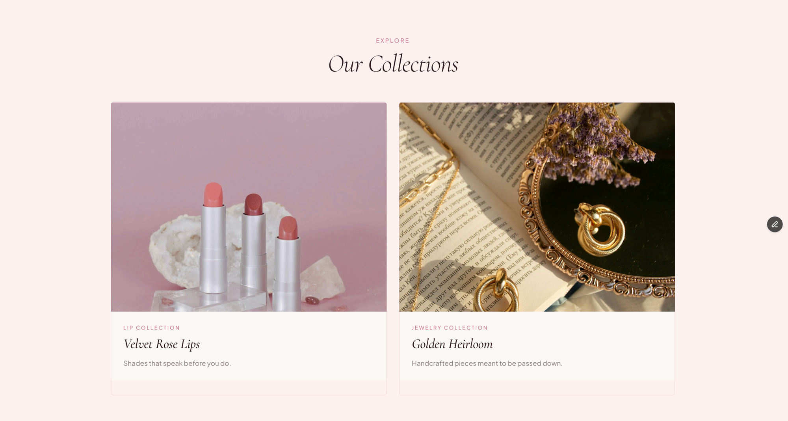

Project Overview
Lumière is a brand concept for a luxury beauty and jewelry label — artisan lipsticks and handcrafted jewelry, positioned as "beauty is an art form." It's a single landing page: a hero, a founder's-story section, two collection cards, and three brand-promise points. There's no code behind it — it's built entirely in Framer's visual canvas.
The Idea
FinTrack and TaskFlow are both engineering-first projects — the interesting decisions were in the data model and the API. Lumière was the opposite on purpose: no backend, no auth, nothing to architect. I wanted a project where the only decisions were visual — brand voice, typography, color, photography — and a luxury beauty/jewelry concept is about as photography- and type-driven as a domain gets, which made it a good stress test for design judgment alone, with no engineering to hide behind.
Planning
I named the brand before designing anything — "Lumière," French for light, which set the tone for everything after: soft, warm, a little precious. Then I planned the section flow on paper before opening Framer: Hero, Our Story, Our Collections, a three-point brand promise, Footer — the standard shape of a luxury ecommerce landing page, chosen deliberately rather than improvised section-by-section.
I also picked the palette and type pairing before laying out a single section: a blush
family (#fdf0ee, #faf7f5) with a dusty-rose accent
(#c0617a) against a near-black plum (#2a1a1e), paired with
Cormorant for headlines and Inter for everything else.
Design
Cormorant carries every headline — "Beauty Crafted for You," "Our Collections" — because an italic serif reads as editorial and luxury in a way a geometric sans never would for this brand. Inter handles the nav, body copy, and buttons, so the elegance stays in the headlines instead of fighting for attention everywhere at once.
The collection cards lean entirely on product photography rather than icon-and-copy blocks — lipsticks staged on raw crystal, jewelry laid across an open book — because for this brand the photography has to do the persuading, not the layout:

Development
"Development" here means Framer's visual canvas, not a code editor. Even without writing code, I structured the page the way I'd structure a coded one — named, nested layers for Hero, Hero Text, Hero Image, Collections Grid, Lip Collection Card, Jewelry Collection Card, Features Row, and so on — so the page stays editable months later instead of becoming a flat pile of shapes with no structure to reason about.
Challenges
Honestly: I designed this at a single desktop width and never went back to configure a mobile or tablet breakpoint. The page currently ships with a fixed 1200px viewport instead of one that adapts, which means on a phone right now it renders as a shrunk-down desktop layout instead of a real mobile layout. That's a real gap, not a stylistic choice — a breakpoint should have been part of the plan from the start, not a follow-up step.
The other thing a second look turned up: there are only three images on the entire page. For a domain where photography is supposed to be doing most of the persuading, that's thin — the ones that exist are well art-directed, but a real version of this brand needs more of them, not just better-composed versions of the same three.
Final Outcome
Lumière shipped as a polished, single-page brand concept, live on Framer's hosting. It reads as a real luxury beauty and jewelry site at a glance — the palette, typography, and photography hold together — but it's a concept, not a store: two named products, no product grid, no cart, and, as of writing, no mobile layout.
Reflections
The biggest lesson was how much of "looks expensive" comes from restraint rather than more elements — one accent color, one serif reserved for headlines only, three genuinely well-chosen photos doing more work than a dozen mediocre ones would have.
The clearer lesson was about process, not visuals: a responsive breakpoint isn't a finishing touch to add once everything "looks done" — it has to be part of the plan from the first section, the same way I'd plan a database schema before writing a route. Next on this one: configure the mobile breakpoint, add more product and lifestyle photography, and collapse "Collections," "Jewelry," and "Beauty" in the nav into a clearer hierarchy instead of three same-level links.